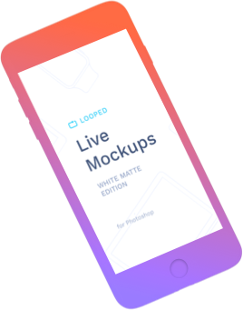

<section class="section mobile">
  <div class="section-inner">
      <div class="section-name">
          <span class="name">Мобильная разработка</span>
        </div>
    <div class="container">
      <div class="container-bg">
        <div class="container-bg-col"></div>
        <div class="container-bg-col"></div>
        <div class="container-bg-col"></div>
      </div>
      <div class="mobile-content">
        <div class="mobile-header">
          <div class="text">
            <h2>Разработка мобильных приложений любого масштаба</h2>
            <p>В 21-м веке человечество перешло в новую эру технологического развития. Мобильный телефон стал не только комуникационным
              устройством, но и повседневным инструментом для решения важных задач. Теперь что бы приобрести товар или услугу
              не надо идти в магазин или салон, достаточно достать телефон из своего кармана. Для отслеживания бизнес процессов
              не обязательно вытягивать ноутбук из сумки думая о том, где поключиться к WI-FI сети. Мобильные устройства
              обрели новый смысл и продолжают свое развитие с геометричкой прогрессией. Quantum Projects верит в то, что
              человечество находиться на старте еще одной технологической революции и всячески способствует развитию этой
              идеи. Мы помогаем реализовывать смелые идеи наших клиентов и самое главное не стесняемся говорить Вам, решит
              ли эта идея бизнес задачу. Вся команда компании Quantum Projects будет рада сотруднечеству. Добро пожаловать!</p>
          </div>
          <div class="header-img">
            <div class="header-img-container" id="mobile-parallax">
              <div class="container-img" data-depth="0.2">
                
              </div>
              <div class="container-img" data-depth="0.4">
                
              </div>
            </div>
          </div>
        </div>
        <div class="mobile-list">
          <div class="first-list">
            <div class="column">
              <h3 class="heavy">Создание стратегии разработки
              </h3>
              <p>Разработка правильной стратегии для вашей компании может быть сложной задачей. Мы прорабатываем и создаем комплексную
                стратегию для Вашего мобильного приложения. Стратегия которая направленна на повышение производительности,
                снижение рисков, а также увеличение отдачи от ваших инвестиций. Всегда готовы рассмотреть любые предложения
                и предложить решение основываясь на бизнес задачах продукта.
              </p>
            </div>
            <div class="column">
              <h3 class="heavy">Поддержка и гарантия</h3>
              <p>На каждый продукт, который побывал в руках наших разработчиков мы даем не только гарантию, но и предоставляем
                поддержку. Мы считаем что связь с нашими клиентами - это очень важно, особенно после релиза. Хотя с другой
                стороны, можем сказать что продукция разработанная в компании Quantum Projects не ломается.
              </p>
            </div>
            <div class="column">
              <h3 class="heavy">UI/UX</h3>
              <p>Мы стремимся к тому, чтобы пользовательский интерфейс был максимально интуитивно понятен. Данная задача не
                бывает легкой, но не для нашей команды. Опираясь на наши знания в области когнитивной психологии, стандартов
                мобильной разработки, передовых принципов дизайна и современных тенденций, мы делаем наши проекты простыми,
                инстинктивными и красивыми. </p>
            </div>
          </div>
          <div class="second-list">
            <div class="column">
              <h3 class="heavy">Технологии</h3>
              <p>Использование современных технологий для разработки мобильных приложений есть залогом успешного релиза и последующего
                развития мобильного приложения. Анализ, прототипирование, разработка, тестирование - это самая малость этапов,
                которые мы применяем для наших разработок. Мы никогда не обещаем свернуть горы, но стараемся достичь максимума
                при любом запросе нашего клиента, то есть Вас.</p>
            </div>
            <div class="column">
              <h3 class="heavy">Кросплатформенность. IOS, Android</h3>
              <p>Мобильные технологии меняют способ ведения бизнеса. Но как лучше всего использовать эту технологию? Quantum
                Projects предлагает многолетний опыт разработки мобильных приложений под iOS и Android. Вы можете рассчитывать
                на то, что мы предоставим надежное и интуитивно понятное решение независимо от платформы и устройства.</p>
            </div>
            <div class="column">
              <h3 class="heavy">Решение бизнесс задач</h3>
              <p>Наши клиенты любят работать с нами, ведь мы не просто создаем приложение и исчезаем. Релиз составляет лишь
                20% от всего процесса. Как только в магазине приложений появиться иконка Вашего продукта, Вам понадобится
                тот, кто сможет ответить на множество вопросов и дать вам лучшие инструменты и стратегии, которые помогут
                сделать вас чемпионом на ринге продуктов для мобильных девайсов. Доверьтесь нашим знаниям и мы поможем продвинуть
                Ваш бизнес за максимально короткий период.</p>
            </div>
          </div>
        </div>
      </div>
    </div>
  </div>
</section>